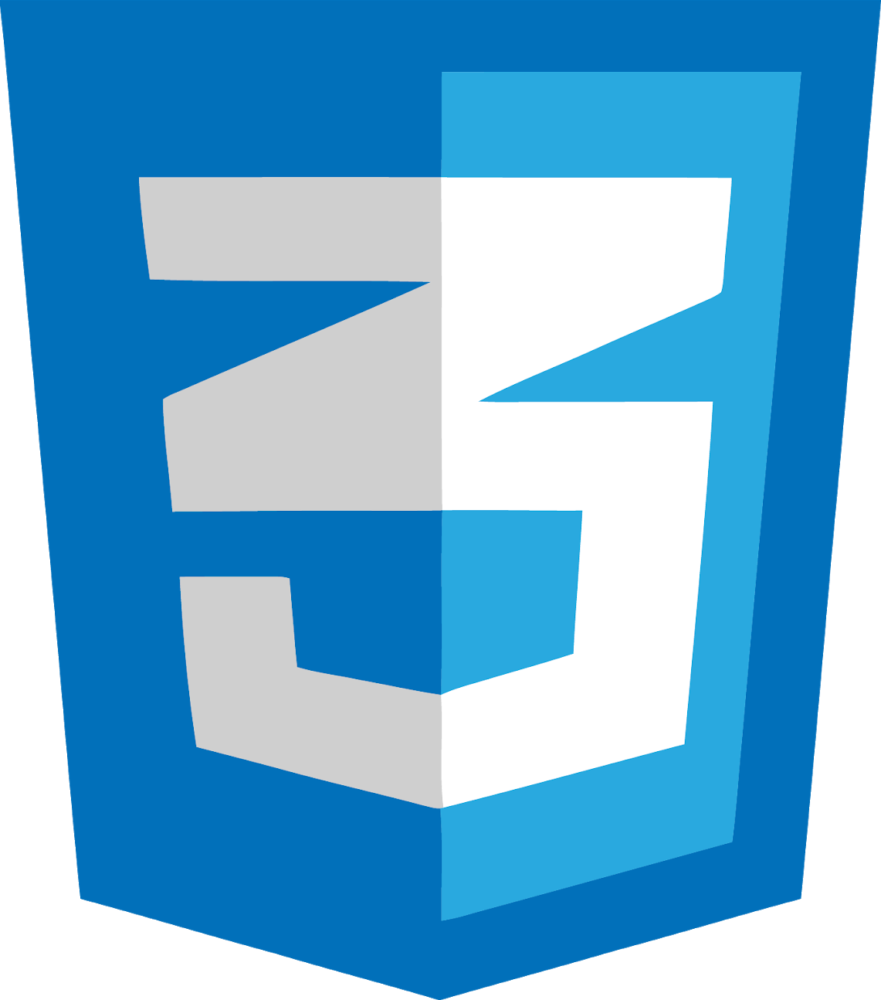
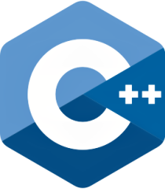
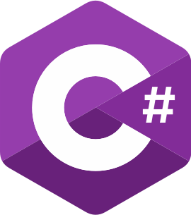
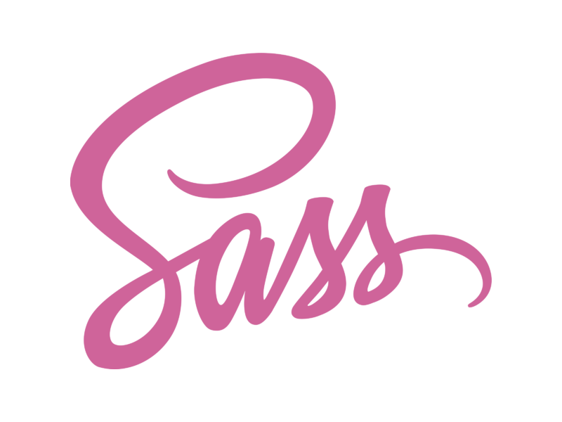
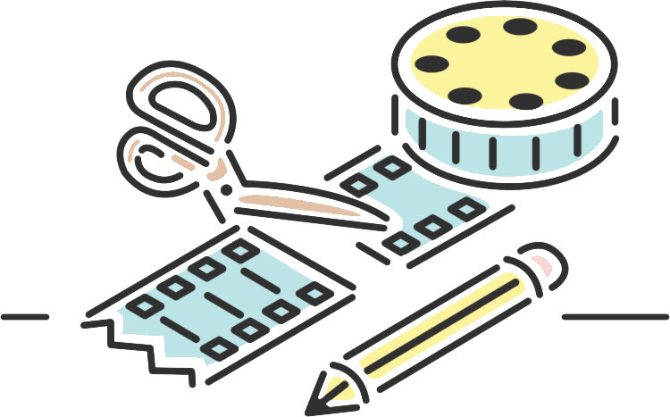
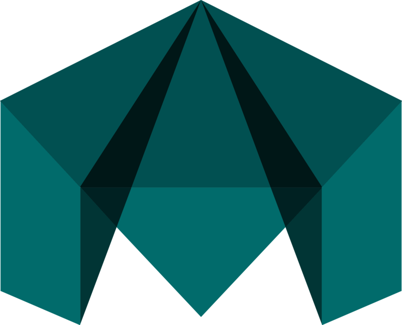

01001010
01110101
01101111
01111010
01100001
01110011
Coding Languages
HTML, JavaScript & CSS


These languages are one of the first languages I've started learning. I doubt there's something I don't know about them.
https://www.juozaszilys.ga> Knowledge Score 9/10
PHP, JQuery and MySql


I've started learning these coding languages almost immediately after HTML, CSS & JavaScript wasn't enough for me to do more advanced, professional projects. I'm very confident in my skills of working with PHP, JQuery and MySql.
https://www.juozaszilys.ga> Knowledge Score 8/10
PostgreSQL

Another SQL language that I've learned during studies. My lecturer complimented my PostgreSQL knowledge to be on the same level as Oracle DB junior specialists knowledge of SQL languages.
https://www.juozaszilys.ga> Knowledge Score 8/10
C++ & C#


C++ is my first ever programming language. I switched to other programming languages soon enough, because I didn't like C++ too much. But at times I do pay a visit to it with diverse projects. My C# knowledge came mostly from Java and Unity game development
https://www.juozaszilys.ga> Knowledge Score 7/10
Java

I mainly use Java OOB programming language for software development. I understand Java interface formulation pretty good. Once I've been doing a mini-game project with Java. This project was a good practice learning what is and how the game engine works. Also, this project inspired me to start learning C#.
https://www.juozaszilys.ga> Knowledge Score 7/10
Unity

I've been doing projects with Unity engine for quite a while, mostly because I'm working on my final year project which is 4th wall breaking game and the rest is because I like game development as well as what opportunities Unity game engine provides for developers such as I. Yet I have seas to conquer to become a professional Unity/game developer, but I'm step by step getting the hang of it.
https://www.juozaszilys.ga> Knowledge Score 6.5/10
Android studio ( XML & Java )

I haven't created any serious projects with the android studio yet, but I do understand android programming a lot better than just basics. I understand fragment, tab, activity lifecycle, animation, drawable, dynamic layout, etc. programming. My android knowledge level is enough for me to create a browser that isn't worse than other browsers on the market.
https://www.juozaszilys.ga> Knowledge Score 5/10
Python, Prolog

I do various A.I. projects using Python, all because this year, I've started A.I. studies. Doing it not merely for the sake of passing, I'd like my future projects to be A.I. I've used Prolog only once for the project that required logic programming, but I do have a good understanding of it since I've done sufficient enough research on it.
https://www.juozaszilys.ga> Knowledge Score 5/10
Nodejs

I'm building myself a list-making application similar to Trello. I'm doing it with the Nodejs only because I need an interactive database.
https://www.juozaszilys.ga> Knowledge Score 4/10
SASS

I've had to use it a few times. Now I've dedicated more time for it because I've noticed a lot of front-end developers use it.
https://www.juozaszilys.ga> Knowledge Score 3/10
React, Laravel, Swift


All of these languages, etc. I've started learning because I've noticed a lot of companies use them for their projects.
https://www.juozaszilys.ga> Knowledge Score 2/10

Video Montage
Sony Vegas & Adobe Premiere Pro
Video montage was my adolescence hobby. I've spent about 9-10 years editing videos on my leisure time with these two programs.
Adobe after effects
Professional video editing program that can save a lot of time working with face or advertisement blurring, camera shake erasing, chroma-keying is on top-notch. This program has a lot of different plugins, official tools. I wouldn't dare to say that I know adobe after effects very good because it's a complicated program and it always has a room for learning. I've encountered a lot of video editors that work as video editors for entire life yet don't know how to edit with this program.
3D Modeling

Maya
Score 8/10
I'm confident in my Maya low poly 3d modelling skills. I also know how to animate in Maya. I'm not bad at UV mapping, hypershade texturing.
ZBrush
Score 6/10
I'm able to create decent 3D models by sculpting in ZBrush but for me sculpting in ZBrush yet requires a lot of time. Sculpting in ZBrush is a meticulous artist job it requires sharp eyes and a lot of time working on small details. Making projects with ZBrush always require multiple additional 3D modelling programs to complete the model. Such as retopology with Maya and texturing with substance painter.

SubstancePainter
Score 4/10
Never spent an immense amount of time with this program, but I'm able to do the work done with it. It's a good program for detailed texturing that helps to make a lightweight model.
Photo Editing
Photoshop, Aseprite, Manga studio
Photo editing and drawing illustrations were my adolescence hobbies, as well as above mentioned, video editing. About 9-10 years ago till now, I often spent my leisure time editing photos or drawing stuff on my computer.
My recent Game Development preview
Please do not use my art in any way possible ©. Thank you.
These recent work are posted here simply to present a slice of what projects do or did I currently work on.
My recent, pixel art drawing for my 4th wall breaking game:

Some slices of the 2 day game jam project I was working on.